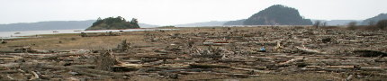

As I wrote about earlier, our New Years' Day Seattle-area, Skagit River delta, Hayton Reserve birding adventure gave us the opportunity to eye a rare Snowy Owl, thanks to the help of some knowledgeable local birders. These same birders also mentioned that a Short-eared Owl had been reported a couple miles away. After enjoying our view of the mottled black and white Snowy Owl, perched on a log a couple hundred feet away, we decided to venture down the road to see if we could luck out again and spot yet another life bird for us.
The location was beyond the end of a road, on the edges of yet more driftwood-covered shorelines. Arriving there, we realized the futility of trying to find the putative Short-eared Owl. This landscape was even more confusing than the previous one. And this owl, unlike the Snowy, would not stand out from the innumerable dead logs strewn about the coast. Worst of all, we didn't have an army of experienced local birders with scopes to do the work for us.
Nonetheless, we headed out, hoping to see something cool in this foreign landscape. The idea that Bald Eagles, another potential life bird for us, were especially common in this river valley in the winter remained in the back of our minds.
We walked along a linear stretch of high ground paralleling the coast of Puget Sound, several hundred feet away. In the middle distance, small but precipitous islands rose dramatically out of the bay. The overcast skies had turned a darker gray since we left the Snowy Owl viewpoint. The wind persisted in gusting across the wide-open spaces, occasionally threatening to knock us off our feet.
Learning my lesson from our time at the Hayton Reserve, I pulled out my ski gloves from the back of the car, so as to preserve my hands for holding binoculars for a longer time.
The first birds we saw were hawks of some type, several of them, but all likely the same species. We got very good looks, from far and from close. They had a very prominent white rump, but otherwise were generally dark. When one made a particularly close approach, flying at about eye-level a few dozen feet in front of us, a rusty coloring on its shoulders and the underside of its wings near its body stood out. We noticed some other field marks as well, and figured picking it out of a field guide later should be straightforward. As usual, that wasn't the case, but now I believe these were Northern Harriers, also known as "Marsh Hawks." The habitat certainly fit their nickname.
As we walked along the dike, hunters, in traditional camouflage, waded into the shallows of the bay not far away. A couple strolled back to their cars, carrying a bloodied, dead, white Snow Goose by the neck.
Far in the distance, a great number of water birds were swimming or wading in the bay. It would have been a sizeable walk to get close enough to get a decent view of these birds without a scope, and the weather was not improving. So instead, we stopped our forward progress, and made a few cursory scans of the driftwood surrounding us hoping to get lucky and spot the Short-eared Owl. Of course, we saw no such thing. Or if we did, we certainly didn't notice it.
We did, however, spot another raptor flying over the water, and trained our binoculars on it, expecting another one of those white-rumped hawks that were so abundant. Immediately upon focusing, however, it was clear that this bird had a very white head and very white tail. Any American would immediately recognize it as our national symbol, the Bald Eagle.
The eagle was not content to just fly around letting us get a good look at him, the first we had seen in the wild. He had work to do. He swooped down onto the surface of the water, quickly emerging with some kind of prey, likely a fish of some sort, that we could not quite make out. Barely pausing, the eagle flew off in the direction from which it had come, holding its next meal in its talons. It flew purposefully past the camouflaged hunters, not far off the ground, towards a more isolated stretch of shore that must have been a quarter-mile away from us. There, it finally landed, presumably to commence its dinner.
As we lowered our binoculars to exclaim to each other at what a neat show this eagle had put on for us, a solid wall of wind blasted us from behind, practically shoving us off the raised dike. This gust did not let up. With it, the earlier occasional drizzle turned into heavier drops of horizontal rain that felt like ice pellets pummeling our backs.
Balancing ourselves in the gale, we looked behind us and saw that the Cascade foothills had completely disappered into the deep gray of an approaching storm. We suspended our hawk and eagle watching and high-tailed it back for our car.
The weather had put an abrupt end to our birding outing. The next day we saw several more Bald Eagles before finally having to return to Texas the day after. But nothing could match the thrill of seeing our first in the act of fishing along the shores of Puget Sound.

{kind=link}
Recent Comments